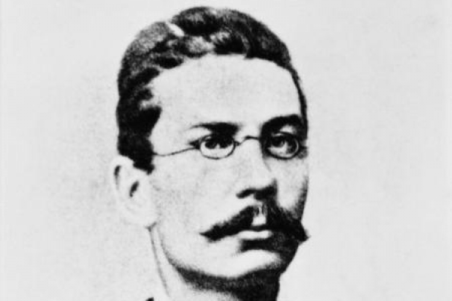
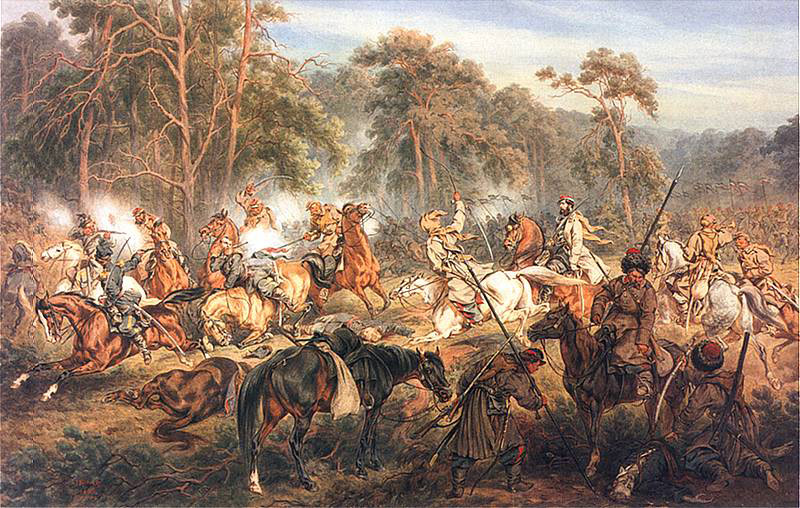

Wróć
Quiz o Powstaniu Styczniowym
Jaka to postać ?

"Kilkanaście lat służył w armii rosyjskiej a także był ostatnim dyktatorem powstania styczniowego."
Marian Langiewicz
Romuald Traugutt
Ludwig Mierosławski
Powstanie styczniowe miało charakter wojny Partyzanckiej

Prawda
Fałsz
W którym Zaborze powstała dzięki pracy organicznej fabryka Hipolita Cegielskiego
W zaborze Austriackim
W zaborze Rosyjskim
W zaborze Pruskim
Ukończ quiz i wróć do głównej strony